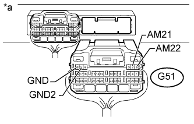

DTC B2287 Сбой ведущего устройства передачи данных LIN |
DTC B278C Нарушение связи с ЭБУ распределения питания |
| Код DTC | Условие обнаружения DTC | Неисправный участок |
| B2287 | Имеется обрыв, короткое замыкание, либо нарушение обмена данными с ЭБУ на участке между ЭБУ распределения питания и ЭБУ сертификации. |
|
| B278C | Отсутствие обмена данными между ЭБУ сертификации и ЭБУ распределения питания в течение более 10 с. |
|
| 1.УДАЛИТЕ DTC |
Сбросьте коды DTC (Нажмите здесь).
| ДАЛЕЕ | |
| 2.ПРОВЕРЬТЕ DTC |
Проверьте коды DTC (Нажмите здесь).
|
| ||||
| OK | ||
| ||
| 3.ПРОВЕРЬТЕ ЖГУТ ПРОВОДОВ И РАЗЪЕМ (ЭБУ СЕРТИФИКАЦИИ - ЭБУ РАСПРЕДЕЛЕНИЯ ПИТАНИЯ) |
Отсоедините разъем G38 ЭБУ сертификации.
Отсоедините разъем G51 ЭБУ распределения питания.
Измерьте сопротивление в соответствии со значениями, приведенными в таблице ниже.
| Контакты для подключения диагностического прибора | Условие | Заданные условия |
| G38-29 (LIN) - G51-24 (LIN2) | Всегда | Менее 1 Ом |
| G38-29 (LIN) или G51-24 (LIN2) - масса | Всегда | 10 кОм или более |
|
| ||||
| OK | |
| 4.ПРОВЕРЬТЕ ЖГУТ ПРОВОДОВ И РАЗЪЕМ (ЭБУ РАСПРЕДЕЛЕНИЯ ПИТАНИЯ – АККУМУЛЯТОРНАЯ БАТАРЕЯ И МАССА) |
|  |
Отсоедините разъем G51 ЭБУ распределения питания.
Измерьте сопротивление в соответствии со значениями, приведенными в таблице ниже.
| Контакты для подключения диагностического прибора | Условие | Заданные условия |
| G51-5 (GND2) - масса | Всегда | Менее 1 Ом |
| G51-6 (GND) - масса | Всегда | Менее 1 Ом |
Измерьте напряжение в соответствии со значениями, приведенными в таблице.
| Контакты для подключения диагностического прибора | Условие | Заданные условия |
| G51-1 (AM22) - масса | Всегда | 11 - 14 В |
| G51-2 (AM21) - масса | Всегда | 11 - 14 В |
| *a | Вид сзади разъема со стороны жгута проводов (к ЭБУ распределения питания) |
|
| ||||
| OK | |
| 5.ЗАМЕНИТЕ ЭБУ РАСПРЕДЕЛЕНИЯ ПИТАНИЯ |
Временно замените ЭБУ распределения питания новым или заведомо исправным (Нажмите здесь).
| ДАЛЕЕ | |
| 6.УДАЛИТЕ DTC |
Удалите коды DTC (Нажмите здесь).
| ДАЛЕЕ | |
| 7.ПРОВЕРЬТЕ DTC |
Проверьте коды DTC (Нажмите здесь).
|
| ||||
| OK | ||
| ||